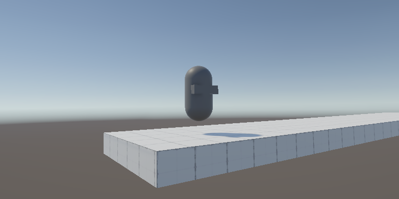
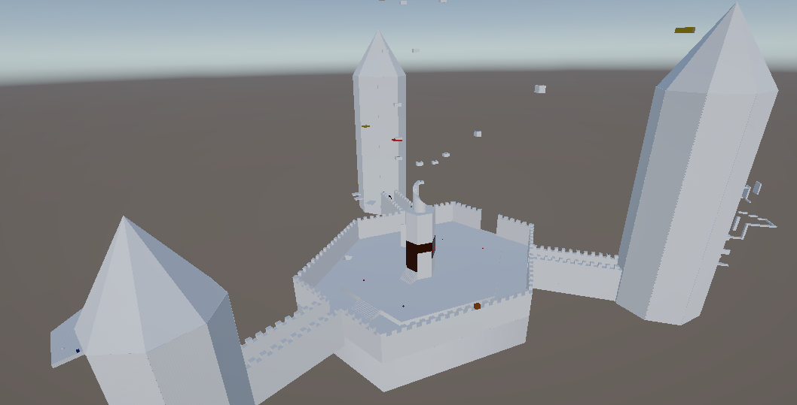
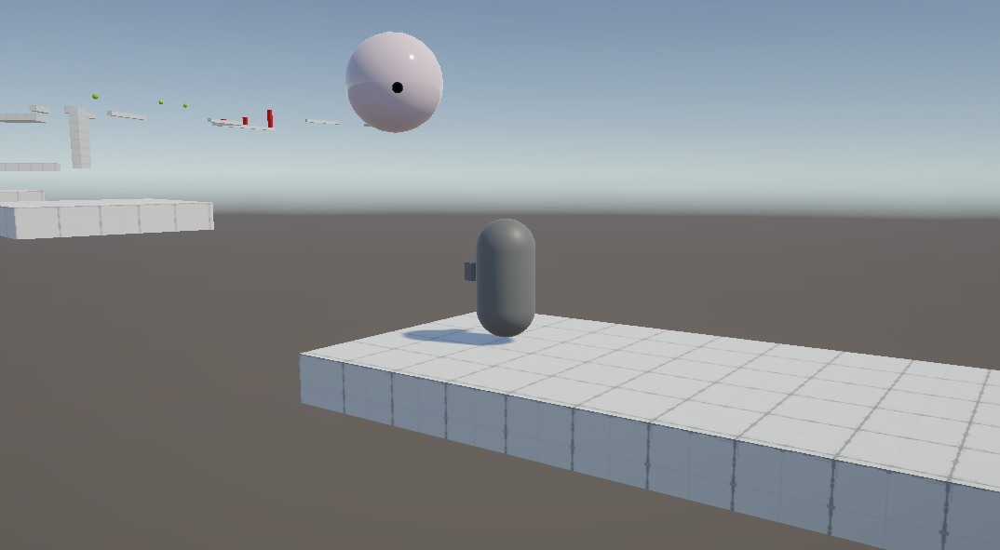

Sky castle is a 3D platformer that focuses on collecting collectables. It has a number of movement mechanics (jumping, dashing, climbing) with 30 collectables to find.

The player has a number of movement mechanics. Mainly, jumping, wall-jumping, dashing and climbing, with the levels using each mechanic to challenge the player. When implementing the player, I developed a hierarchical state machine to allow each element of the player to be developed independently, and to make fixing bugs easier.

The majority of the game takes place in one main level, which has paths to four smaller levels. The tutorial where the player starts, two smaller areas each focused on one mechanic, and the final boss. The main level is designed to look like a floating castle courtyard, with towers that lead to the smaller levels, and floating islands the player can reach. The main level has a number of hidden challenges and collectables, as well as a main path to follow. The game has many obstacles. Enemies that chase after the player, cannons and barriers that kill the player when touched, with other minor mechanics as a part of the level design itself. moving platforms, platforms that dissapear and re-appear, etc.

The goal of the game is to find 15 collectables, and beat the boss stage. After this point the player is given the option to try and find the remaining collectables.